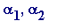
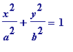

Theodor Schneider (1911-1988)
I once heard Schneider give a seminar talk; it was at Imperial College (London), in the late-60s/early-70s. He was introduced by the legendary K. F. Roth, who was then at IC. Roth introduced Schneider as being someone who needed no introduction, who had done this great thing and that great thing in transcendence . His talk - which I can only vaguely recollect - was roughly about this: suppose f( x , y ) is a 2-variable polynomial with rational coefficients such that the curve f( x , y ) = 0 has a point on it with both co-ordinates algebraic numbers of degree 5, then - subject to certain complicated conditions - that curve has a rational point on it (i.e. both co-ordinates are rarional numbers).
There were many 'names' at the talk, at the end of which there was a deathly silence when Roth asked if anyone had any questions to ask... (Everyone knows that silence!) Some very eminent listener (whose name shall remain a secret!) blurted out: and has your result got any other applications in transcendence? Poor Schneider looked absolutely aghast, and said that he hadn't been talking about transcendence ... Blushes all round, and Roth jumped in to relieve the situation by asking some sensible questions...
Finally, the talk was in one of those old rooms, with old school desks (is it still like this?), so that one was sitting beside just one other person. The person beside me and myself introduced each other; he told me - in an American accent - that he was 'Paul Cohen', and I wondered - without asking him - if he was the Paul Cohen (1966 Fields Medallist, famed for his work on the independence of the Continuum Hypothesis and Axiom of Choice etc). A few minutes later I said to someone (RB): do you see that guy over there, he told me he was Paul Cohen; do you suppose he is...? RB confirmed that he was. Happy days.
Schneider features in the Hilbert's seventh problem section later, and here, as with Siegel, I give only some small flavour of the sort of contribution made by this great figure.
Schneider's (1937) Theorem
(recall Siegel's earlier 1932 related theorem). Let P(
z
) be the Weirstrass elliptic function with algebraic number
invariants
 and
in (the
standard
equation relating P(
z
) and P'(
z
))
and
in (the
standard
equation relating P(
z
) and P'(
z
))
![diff(P(z),z)^2 = 4*P(z)^3-g[2]*P(z)-g[3]](images/transcendental765.gif) ;
;
then
any
(non-zero) period of P(
z
) is transcendental. Also,
 is transcendental for any algebraic
.
is transcendental for any algebraic
.
For the next, recall the j( z )-modular function from an earlier section.
Schneider's (1937) Theorem
. Let
be algebraic, with

real and
; then
is transcendental whenever
 is of degree
greater
than 2.
is of degree
greater
than 2.
Schneider's ellipse Theorem . Any ellipse with algebraic major and minor axes has transcendental circumference.
In other words, if
a
and
b
are algebraic numbers, then the circumference of the curve with equation

, has transcendental circumference. Note that the transcendence of
 is a minor consequence of this theorem.
is a minor consequence of this theorem.